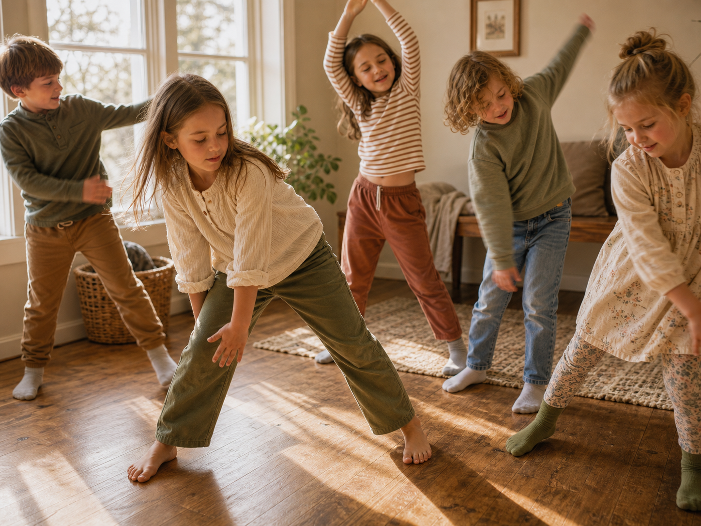

Five daily activities, one full day of enrichment — every child experiences hands-on academics, science, leadership, creativity, and language every single session.
We gather twice a week for a full enrichment day. Every student experiences all five activities each day — to keep class sizes small and give each age group focused, age-appropriate instruction, students are grouped by age and rotate through Roots & Research, Lead & Launch, and Speak & Story / Canvas & Curtain in a different order, each with its own dedicated teacher and classroom.

| Time | Block |
|---|---|
| 10:00 – 10:15 AM |
Morning Move & Groove A few minutes of stretching, cross-body movement, and rhythm games to get blood flowing and young brains switched on — shown to support attention and readiness to learn before academics begin. |
| 10:15 – 11:15 AM |
Word & World Reading, writing, communication, and exploring history, geography, and culture through hands-on projects. |
| 11:15 AM – 12:05 PM |
Rotation 1 Order varies by age group — see the rotations below. |
| 12:05 – 12:55 PM |
Rotation 2 Order varies by age group — see the rotations below. |
| 12:55 – 1:45 PM |
Rotation 3 Order varies by age group — see the rotations below. |
| 1:45 – 2:00 PM |
Closing Circle Reflection, sharing, and getting ready for dismissal. |
Please send your child with a light snack or lunch and a water bottle — students are welcome to eat quietly at their table while working.
Between the morning Word & World block and the day's Closing Circle, students rotate through three more dedicated activities each day — every child experiences all of it, every session.
Tuesdays — Speak & Story: Introduction to a new language through songs, conversation, and storytelling in an immersive, playful setting designed to build genuine communication skills and cultural appreciation.
Thursdays — Canvas & Curtain: Creativity is not a talent — it's a practice. Children explore visual art, theatre, music, and dance/movement in an environment where experimentation is celebrated and every child finds their creative voice.
There is no better classroom than the living world. In our garden and outdoor spaces, children learn through direct engagement with nature — observing, hypothesizing, and discovering the science that surrounds them every day.
Nature journaling, outdoor exploration, and seasonal projects connect children to the rhythms of the earth and cultivate a deep sense of stewardship and wonder.
One of the great gifts of home education is the freedom to teach what truly matters for life. Lead & Launch gives children real-world competence, practical confidence, and the deep satisfaction of knowing how to do things.
From the kitchen to the sewing table, from tool use to financial literacy, children learn skills that will serve them for a lifetime.
We invite interested families to connect with us and learn more about joining our learning community. Spots are limited to keep our groups small and intentional.